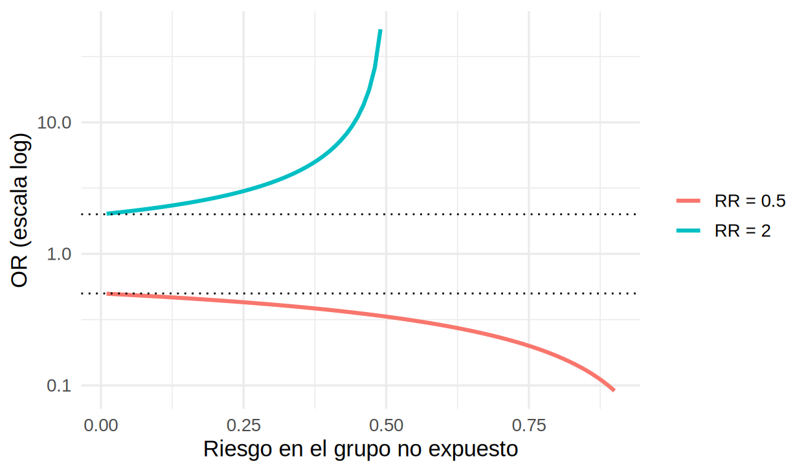

library(tidyverse)
library(survival)
source("R/funciones_epi.R") # medidas_2x2()
source("R/funciones_extra_a.R") # pct(), interpretar_asociacion()
ckd <- read_csv("Bases/ckd_isglt2.csv", show_col_types = FALSE) |>
mutate(grupo = factor(isglt2, levels = c(0, 1), labels = c("Sin iSGLT2", "Con iSGLT2")))
# La "verdad" (solo posible porque la base es simulada): efectos causales reales
oraculo <- read_csv("Bases/ckd_isglt2_oraculo.csv", show_col_types = FALSE)
rr_verdadero <- mean(oraculo$evento_36m_1) / mean(oraculo$evento_36m_0) # riesgo si todos tratados / si ningunoMedidas de asociación: ¿cuántas veces más (o menos) frecuente?
Nota🩺 Escenario
En una semana lees tres resúmenes: “con iSGLT2 hubo 43 % menos eventos renales (RR 0.57)”, “los casos de lesión renal aguda tuvieron 3.8 veces los odds de haber usado AINE (OR 3.8)” y “la hiperpotasemia fue 2.6 veces más prevalente con IECA/ARA-II (RP 2.6)”. Son tres medidas distintas, con nombres parecidos, y no se interpretan igual. Aquí aprenderás cuál usar según el diseño y cómo decir cada resultado con palabras.
Lo que vamos a hacer
- Calcular RP, RR, RTI, OR y HR con ejemplos de nefrología.
- Leer el intervalo de confianza y el valor p sin caer en las trampas clásicas.
- Redactar la interpretación con una plantilla y una función de R.
- Comparar cada medida cruda con la verdad en datos simulados.
Paso 0. Una idea común y la medida según el diseño
Todas las medidas de asociación comparan la frecuencia de un desenlace entre dos grupos (expuestos y no expuestos) dividiéndolas. Si no hay asociación, el cociente vale 1: es el valor nulo. Mayor que 1, el desenlace es más frecuente en el grupo expuesto; menor que 1, menos frecuente.
La medida que corresponde depende de qué midió el diseño (Capítulo 1.2):
- Transversal: razón de prevalencias (RP).
- Cohorte o ECA con seguimiento completo: riesgo relativo (RR); con seguimiento desigual, razón de tasas (RTI) o HR.
- Casos y controles: solo el OR.
- Regresión logística, en cualquier diseño: el OR.
En todo el capítulo usamos la base simulada ckd_isglt2 (adultos con ERC y DM2) y la pregunta: en adultos con ERC (G3-G4) y DM2 (P), ¿quienes inician un iSGLT2 (I), comparados con quienes no (C), tienen menos eventos renales (TFGe −40 %, diálisis o trasplante) a 36 meses (O)?
Paso 1. Razón de prevalencias (RP): la fotografía comparada
Qué compara. La prevalencia de la condición en expuestos y no expuestos, medida en un solo momento (estudio transversal).
\[ \text{RP} = \frac{\text{Prevalencia en expuestos}}{\text{Prevalencia en no expuestos}} \]
Ejemplo (hipotético): en 400 pacientes con ERC se midió el potasio en la consulta; 200 usaban IECA/ARA-II y 200 no. Hubo hiperpotasemia (K⁺ ≥ 5.5 mEq/L) en 36 de los que usaban IECA/ARA-II y en 14 de los que no. La función medidas_2x2() pide las cuatro celdas de la tabla 2×2 en este orden: expuestos con evento (a), expuestos sin evento (b), no expuestos con evento (c) y no expuestos sin evento (d).
rp <- medidas_2x2(a = 36, b = 164, # con IECA/ARA-II: con y sin hiperpotasemia
c = 14, d = 186) # sin IECA/ARA-II: con y sin hiperpotasemia
rp# A tibble: 5 × 4
medida estimado ic_inf ic_sup
<chr> <dbl> <dbl> <dbl>
1 Proporción en expuestos 0.18 NA NA
2 Proporción en no expuestos 0.07 NA NA
3 Diferencia (RD) 0.11 0.0461 0.174
4 Razón de proporciones (RR o RP) 2.57 1.43 4.62
5 Odds ratio (OR) 2.92 1.52 5.60 Qué vemos. La prevalencia fue 18 % vs. 7 %: RP = 2.57 (IC 95 % 1.43 a 4.62). “La prevalencia de hiperpotasemia fue 2.6 veces mayor entre quienes usaban IECA/ARA-II.” Pero en un transversal no sabes qué ocurrió primero: un paciente con hiperpotasemia pudo suspender el IECA, lo que enmascara la asociación (causalidad inversa).
Paso 2. Riesgo relativo (RR): la comparación de riesgos
Qué compara. La incidencia acumulada (riesgo) del evento en dos grupos seguidos el mismo periodo.
\[ \text{RR} = \frac{\text{Riesgo en expuestos}}{\text{Riesgo en no expuestos}} \]
tabla <- table(grupo = ckd$grupo, evento = ckd$evento)
tabla evento
grupo 0 1
Sin iSGLT2 2141 509
Con iSGLT2 2094 256res_rr <- medidas_2x2(
a = tabla["Con iSGLT2", "1"], b = tabla["Con iSGLT2", "0"],
c = tabla["Sin iSGLT2", "1"], d = tabla["Sin iSGLT2", "0"]
)
res_rr# A tibble: 5 × 4
medida estimado ic_inf ic_sup
<chr> <dbl> <dbl> <dbl>
1 Proporción en expuestos 0.109 NA NA
2 Proporción en no expuestos 0.192 NA NA
3 Diferencia (RD) -0.0831 -0.103 -0.0636
4 Razón de proporciones (RR o RP) 0.567 0.493 0.652
5 Odds ratio (OR) 0.514 0.437 0.605 Qué vemos. El riesgo a 36 meses fue 10.9 % con iSGLT2 y 19.2 % sin él: RR = 0.57 (IC 95 % 0.49 a 0.65) y diferencia de riesgos de -8.3 puntos porcentuales.
Cómo decirlo. RR = 1: riesgo igual. RR = 0.57: riesgo 43 % menor (1 − 0.57). RR = 1.5: 50 % mayor. RR = 3: 3 veces el del grupo de referencia. Cuidado: “3 veces mayor” no es “3 % mayor” ni “30 % mayor”. Para evitar confusiones, escribe siempre junto al RR las dos cifras absolutas: “10.9 % vs. 19.2 %”.
El RR también se puede estimar con una regresión de Poisson con errores robustos (útil cuando después quieras ajustar por covariables). Da el mismo resultado:
mod_pois <- glm(evento ~ grupo, family = poisson, data = ckd)
se_robusto <- sqrt(diag(sandwich::vcovHC(mod_pois, type = "HC0")))["grupoCon iSGLT2"]
tibble(RR = exp(coef(mod_pois)[["grupoCon iSGLT2"]]),
ic_inf = exp(coef(mod_pois)[["grupoCon iSGLT2"]] - 1.96 * se_robusto),
ic_sup = exp(coef(mod_pois)[["grupoCon iSGLT2"]] + 1.96 * se_robusto))# A tibble: 1 × 3
RR ic_inf ic_sup
<dbl> <dbl> <dbl>
1 0.567 0.493 0.652
Advertencia⚠️ Trampa frecuente: estas medidas son crudas, no son “el efecto”
El RR crudo es 0.57, pero en esta base simulada conocemos la verdad: si todos los pacientes hubieran recibido el fármaco, el riesgo habría sido 0.74 veces el que habrían tenido sin él. La asociación cruda exagera el beneficio porque quienes reciben el fármaco son más jóvenes, menos frágiles y con mejor TFGe. Medir una asociación no es lo mismo que estimar un efecto; convertir lo primero en lo segundo es el tema de la Parte 3.
Paso 3. Razón de tasas de incidencia (RTI): cuando el seguimiento es desigual
Qué compara. Dos tasas (casos por persona-tiempo). Es la medida adecuada cuando los pacientes se siguen tiempos distintos (fallecimientos, pérdidas, ingreso escalonado).
\[ \text{RTI} = \frac{\text{Tasa de incidencia en expuestos}}{\text{Tasa de incidencia en no expuestos}} \]
# A tibble: 2 × 4
grupo eventos persona_anios tasa_100pa
<fct> <dbl> <dbl> <dbl>
1 Sin iSGLT2 509 7146. 7.12
2 Con iSGLT2 256 6650. 3.85# RTI con IC 95 % (método de Wald en escala log)
exp_g <- pt |> filter(grupo == "Con iSGLT2"); ctl <- pt |> filter(grupo == "Sin iSGLT2")
rti <- exp_g$tasa_100pa / ctl$tasa_100pa
se_log <- sqrt(1 / exp_g$eventos + 1 / ctl$eventos)
rti_tab <- tibble(RTI = rti, ic_inf = exp(log(rti) - 1.96 * se_log), ic_sup = exp(log(rti) + 1.96 * se_log))
rti_tab# A tibble: 1 × 3
RTI ic_inf ic_sup
<dbl> <dbl> <dbl>
1 0.540 0.465 0.628Qué vemos. Las tasas son 3.8 y 7.1 eventos por 100 persona-años: RTI = 0.54, es decir, la velocidad de aparición del evento fue 46 % menor con iSGLT2. La RTI se parece al RR cuando el evento es poco frecuente, el seguimiento es similar y casi no hay censura; aquí el evento ocurre en ~15 % y por eso difieren ligeramente.
Paso 4. Odds ratio (OR): la medida de los casos y controles
Qué compara. Los odds de un evento entre grupos. Un odds es la probabilidad de que ocurra dividida entre la de que no ocurra (si \(p = 0.2\), el odds es \(0.2/0.8 = 0.25\), “una contra cuatro”):
\[ \text{odds} = \frac{p}{1 - p} \qquad\qquad \text{OR} = \frac{\text{odds en expuestos}}{\text{odds en no expuestos}} \]
Ejemplo (hipotético, casos y controles): ¿el uso reciente de AINE se asocia con lesión renal aguda (LRA) hospitalaria? Se incluyeron 100 casos de LRA y 200 controles hospitalizados sin LRA. Entre los casos, 40 habían usado AINE y 60 no; entre los controles, 30 sí y 170 no. Recuerda el orden: las filas de medidas_2x2() son los grupos de exposición (con y sin AINE) y las columnas, los casos y controles.
or_cc <- medidas_2x2(a = 40, b = 30, # con AINE: casos, controles
c = 60, d = 170) # sin AINE: casos, controles
or_cc# A tibble: 5 × 4
medida estimado ic_inf ic_sup
<chr> <dbl> <dbl> <dbl>
1 Proporción en expuestos 0.571 NA NA
2 Proporción en no expuestos 0.261 NA NA
3 Diferencia (RD) 0.311 0.181 0.440
4 Razón de proporciones (RR o RP) 2.19 1.63 2.95
5 Odds ratio (OR) 3.78 2.16 6.60 Qué vemos. En casos y controles solo el OR es válido: las “proporciones” y el RR que imprime la tabla dependen de cuántos controles decidiste incluir, no de la realidad. OR = 3.78 (IC 95 % 2.16 a 6.60): “los casos tuvieron 3.8 veces los odds de haber usado AINE que los controles”.
El OR exagera cuando el evento es común
Con eventos raros (< 10 %), OR ≈ RR. Con eventos frecuentes, el OR se aleja de 1 más que el RR:
curva <- expand_grid(riesgo_basal = seq(0.01, 0.9, by = 0.01), rr = c(0.5, 2)) |>
filter(rr * riesgo_basal < 1) |> # el riesgo expuesto no puede superar 1
mutate(or = (rr * riesgo_basal / (1 - rr * riesgo_basal)) / (riesgo_basal / (1 - riesgo_basal)),
rr = factor(rr, levels = c(0.5, 2), labels = c("RR = 0.5", "RR = 2")))
curva |>
ggplot(aes(riesgo_basal, or, color = rr)) +
geom_line(linewidth = 1.1) +
geom_hline(yintercept = c(0.5, 2), linetype = "dotted") +
scale_y_log10() +
labs(x = "Riesgo en el grupo no expuesto", y = "OR (escala log)", color = NULL) +
theme_minimal(base_size = 13)
En ckd hay un desenlace común: pérdida rápida de TFGe (caída mayor a 3 mL/min/1.73 m² por año). Mira cuánto se separan RR y OR:
ckd <- ckd |> mutate(caida_rapida = as.integer(pendiente_tfg < -3))
t2 <- table(grupo = ckd$grupo, caida = ckd$caida_rapida)
or_rr_comun <- medidas_2x2(t2["Con iSGLT2", "1"], t2["Con iSGLT2", "0"],
t2["Sin iSGLT2", "1"], t2["Sin iSGLT2", "0"]) |>
filter(str_detect(medida, "RR|OR"))
or_rr_comun# A tibble: 2 × 4
medida estimado ic_inf ic_sup
<chr> <dbl> <dbl> <dbl>
1 Razón de proporciones (RR o RP) 0.227 0.198 0.261
2 Odds ratio (OR) 0.151 0.129 0.178La pérdida rápida ocurre en 25 % de los pacientes. Con ese riesgo, el OR (0.15) parece un efecto mucho más fuerte que el RR (0.23), aunque es la misma asociación.
Tip💡 ¿RR u OR?
Si tienes una cohorte o un ECA, reporta RR (y la diferencia de riesgos). Reserva el OR para casos y controles o para cuando tu modelo (regresión logística) lo exija, y recuerda que el OR no es un riesgo. Con desenlaces comunes, evita traducir un OR como “veces más riesgo”.
Paso 5. Hazard ratio (HR): la velocidad en el tiempo
Qué compara. El hazard (riesgo instantáneo) de presentar el evento en cada momento del seguimiento, entre quienes aún no lo han presentado. Se estima con modelos de supervivencia (Cox) y se resume en un número si el HR es aproximadamente constante en el tiempo. Piensa en el hazard como la “velocidad” a la que se acumulan los eventos en cada instante; no es una probabilidad y no es lo mismo que el RR, aunque a veces se parezcan.
\[ \text{HR} = \frac{\text{hazard en expuestos}}{\text{hazard en no expuestos}} \]
library(survminer)
ajuste_km <- survfit(Surv(tiempo_meses, evento) ~ grupo, data = ckd)
ggsurvplot(
ajuste_km, data = ckd,
conf.int = TRUE, risk.table = TRUE, pval = FALSE,
xlab = "Meses de seguimiento", ylab = "Libre de evento renal",
legend.title = "", legend.labs = c("Sin iSGLT2", "Con iSGLT2"),
palette = c("#D55E00", "#0072B2"), break.time.by = 6
)
exp(coef) exp(-coef) lower .95 upper .95
grupoCon iSGLT2 0.5408431 1.848965 0.4654205 0.6284882Qué vemos. HR = 0.54 (IC 95 % 0.47 a 0.63): en cualquier momento del seguimiento, los pacientes con iSGLT2 tuvieron en promedio 46 % menos riesgo instantáneo de evento renal. Y de nuevo, la verdad: en el guion que genera estos datos, el fármaco reduce el hazard de cada paciente a 0.70 de su valor (HR individual = 0.70). El HR crudo (0.54) parece mejor porque quienes reciben el fármaco ya eran, en promedio, más sanos.
Dos advertencias: “redujo el riesgo en X %” suele ser una mala traducción de un HR, que es una razón de velocidades, no de proporciones de pacientes (Hernán, 2010). Y antes de resumir con un único HR, verifica la proporcionalidad de hazards (cox.zph(cox); lo veremos en el Capítulo 9).
Paso 6. Cómo escribir el resultado: una plantilla
Un resultado mal redactado desperdicia un análisis bien hecho. La plantilla de interpretación que usa el autor en sus cursos (inspirada en las de EviSalud) tiene siempre las mismas casillas:
En [población], [la prevalencia / el riesgo / la tasa / los odds / el hazard] de [desenlace] en el grupo [expuesto] fue [X veces / X %] [mayor / menor] que en el grupo [control]. Este resultado [fue / no fue] estadísticamente significativo.
Cuando la exposición es numérica, cambia la casilla de los grupos: “En [población], por cada [unidad adicional] de [exposición], [medida] de [desenlace] fue [X %] [mayor / menor]…”. La función interpretar_asociacion() rellena las casillas por ti (revisa siempre que la frase tenga sentido clínico):
poblacion <- "En adultos con ERC G3-G4 y diabetes tipo 2"
interpretar_asociacion("RR", res_rr$estimado[4], res_rr$ic_inf[4], res_rr$ic_sup[4],
poblacion, "de evento renal a 36 meses",
expuesto = "que inició iSGLT2", control = "que no lo inició")[1] "En adultos con ERC G3-G4 y diabetes tipo 2, el riesgo de evento renal a 36 meses en el grupo que inició iSGLT2 fue 43 % menor que en el grupo que no lo inició (RR = 0.57; IC 95 % 0.49 a 0.65). Este resultado fue estadísticamente significativo."[1] "En adultos con ERC G3-G4 y diabetes tipo 2, el hazard (riesgo instantáneo) de evento renal en el grupo con iSGLT2 fue 46 % menor que en el grupo sin iSGLT2 (HR = 0.54; IC 95 % 0.47 a 0.63). Este resultado fue estadísticamente significativo."# Exposición numérica: HR por cada 10 mL/min/1.73 m2 adicionales de TFGe basal
cox_tfg <- coxph(Surv(tiempo_meses, evento) ~ I(tfg_basal / 10), data = ckd)
ci_tfg <- summary(cox_tfg)$conf.int
interpretar_asociacion("HR", ci_tfg[1, 1], ci_tfg[1, 3], ci_tfg[1, 4],
poblacion, "de evento renal",
unidad = "10 mL/min/1.73 m² adicionales de TFGe basal")[1] "En adultos con ERC G3-G4 y diabetes tipo 2, por cada 10 mL/min/1.73 m² adicionales de TFGe basal, el hazard (riesgo instantáneo) de evento renal fue 35 % menor (HR = 0.65; IC 95 % 0.60 a 0.70). Este resultado fue estadísticamente significativo."Paso 7. Valor p e intervalo de confianza
Además del valor puntual, muestra siempre su precisión.
- IC 95 %: rango de valores del parámetro compatibles con los datos y el modelo. En 50 muestras repetidas, en promedio 95 % de los intervalos contienen el valor verdadero (los rojos de la figura no).
- Valor p: probabilidad de observar un resultado tan extremo como el obtenido (o más) si la hipótesis nula fuera cierta (por ejemplo, RR = 1).

Una regla mnemotécnica del autor: el 1 es la oveja negra. Para una razón (RR, OR, HR, RP, RTI), el 1 es el valor “sin asociación”. Si el IC toca el 1, el resultado no es estadísticamente significativo; si todo el intervalo está por encima de 1, es significativo y de “riesgo”; si todo está por debajo de 1, es significativo y “protector”. Por ejemplo: HR = 1.85 (IC 95 % 1.15 a 2.96, p = 0.011) es compatible con aumentos de 15 % a 196 % del hazard; OR = 1.15 (IC 0.90 a 1.35) toca el 1; OR = 0.80 (IC 0.70 a 0.99) es protector.
Lo que el valor p no es:
- No es la probabilidad de que la hipótesis nula sea cierta.
- No mide el tamaño ni la importancia clínica del efecto.
- “p < 0.05” no significa “efecto real”, ni “p ≥ 0.05”, “no hay efecto”: con muestras grandes cualquier diferencia mínima es “significativa” y con muestras pequeñas un efecto importante puede no serlo.
Reporta estimado + IC 95 % + una medida absoluta, y deja el valor p como complemento. Mira siempre el límite del IC más cercano a 1: ¿seguiría siendo clínicamente relevante?
Importante🎯 En resumen: ¿qué medida uso?
| Medida | Compara… | Diseño típico | Valor nulo | Función en R |
|---|---|---|---|---|
| RP (razón de prevalencias) | Prevalencias | Transversal | 1 | 2×2 o glm(family = poisson) con IC robusto |
| RR (riesgo relativo) | Incidencias acumuladas | Cohorte, ECA | 1 | 2×2 o glm(family = poisson) con IC robusto |
| RTI (razón de tasas de incidencia) | Tasas con persona-tiempo | Cohorte con seguimiento desigual | 1 |
poisson.test(); glm(family = poisson, offset = log(pt))
|
| OR (odds ratio) | Odds de evento (o de exposición) | Casos y controles; regresión logística | 1 | glm(family = binomial) |
| HR (hazard ratio) | Riesgo instantáneo en el tiempo | Análisis de supervivencia | 1 | survival::coxph() |
- Todas valen 1 si no hay asociación; el IC que toca el 1 no es significativo.
- El OR no es un riesgo y exagera cuando el evento es común.
- Redacta con la plantilla y acompaña la medida relativa de una absoluta (Capítulo 2.3).
- Una asociación cruda no es un efecto causal: compárala con la verdad cuando la tengas.
Ejercicio. (1) Con los datos de ckd, calcula la RP de albuminuria severa (UACR ≥ 300 mg/g) según tenga o no enfermedad cardiovascular previa (ecv) y redáctala con interpretar_asociacion(). (2) En un estudio de casos y controles, ¿por qué no puedes reportar un RR? (3) Un artículo reporta “OR = 0.45, IC 95 % 0.30 a 0.68” para un desenlace que ocurre en 40 % de los pacientes: ¿puedes decir que el riesgo fue 55 % menor? ¿Por qué?
Referencias
Zafra-Tanaka JH, Taype-Rondan A, Fernandez-Guzman D. Cómo entender las medidas de efecto en la investigación clínica: interpretación práctica y aplicación. Rev Cuerpo Méd Hosp Nac Almanzor Aguinaga Asenjo. 2023;16. https://cmhnaaa.org.pe/ojs/index.php/rcmhnaaa/article/view/1935
Hernán MA. The hazards of hazard ratios. Epidemiology. 2010;21(1):13-15.
Greenland S, Senn SJ, Rothman KJ, et al. Statistical tests, P values, confidence intervals, and power: a guide to misinterpretations. Eur J Epidemiol. 2016;31:337-350.
Nota editorial
- Esta sección fue editada con asistencia de IA (ChatGPT; revisión editorial con Claude). Los ejemplos con datos hipotéticos o simulados no corresponden a pacientes reales. Se corrigió el orden de las celdas del ejemplo de casos y controles (el OR no cambia, pero ahora las filas representan los grupos de exposición). La plantilla de interpretación y la regla de “la oveja negra” se adaptaron de las diapositivas y plantillas del autor.